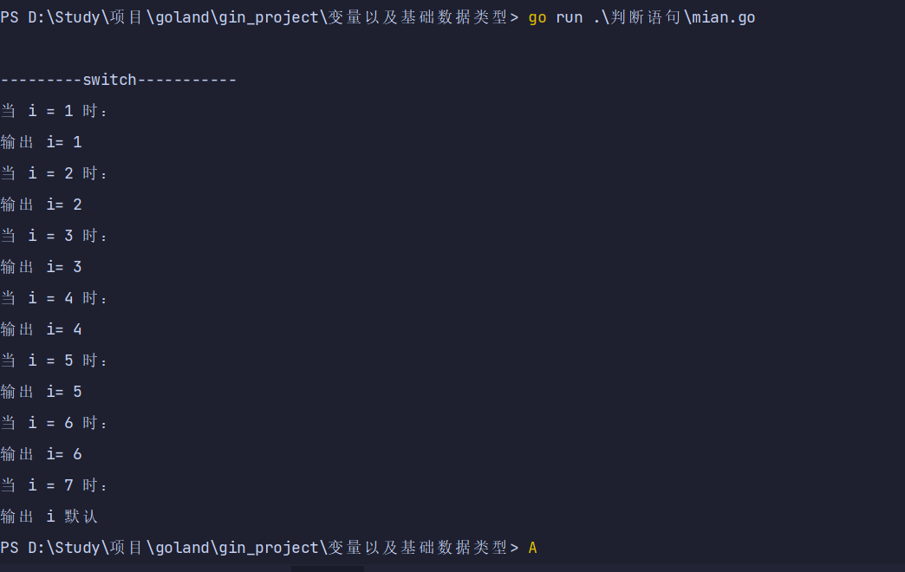

if
if 语句由布尔表达式后紧跟一个或多个语句组成。
语法
if 布尔表达式 {
/* 在布尔表达式为 true 时执行 */
}
If 在布尔表达式为 true 时，其后紧跟的语句块执行，如果为 false 则不执行。
if else
if 语句 后可以使用可选的 else 语句, else 语句中的表达式在布尔表达式为 false 时执行。
语法
if 布尔表达式 {
/* 在布尔表达式为 true 时执行 */
}
else {
/* 在布尔表达式为 false 时执行 */
}
If 在布尔表达式为 true 时，其后紧跟的语句块执行，如果为 false 则执行 else 语句块。
if 语句嵌套
你可以在 if 或 else if 语句中嵌入一个或多个 if 或 else if 语句。
语法
if 布尔表达式 1 {
/* 在布尔表达式 1 为 true 时执行 */
if 布尔表达式 2 {
/* 在布尔表达式 2 为 true 时执行 */
}
}
你可以以同样的方式在 if 语句中嵌套else if...else语句
switch
switch 语句用于基于不同条件执行不同动作，每一个 case 分支都是唯一的，从上至下逐一测试，直到匹配为止。
switch 语句执行的过程从上至下，直到找到匹配项，匹配项后面也不需要再加 break。
switch 默认情况下 case 最后自带 break 语句，匹配成功后就不会执行其他 case，如果我们需要执行后面的 case，可以使用fallthrough。
语法
switch var1 {
case val1:
...
case val2:
...
default:
...
}
变量 var1 可以是任何类型，而 val1 和 val2 则可以是同类型的任意值。类型不被局限于常量或整数，但必须是相同的类型；或者最终结果为相同类型的表达式。
您可以同时测试多个可能符合条件的值，使用逗号分割它们，例如：case val1, val2, val3。
select
select 是 Go 中的一个控制结构，类似于用于通信的 switch 语句。每个 case 必须是一个通信操作，要么是发送要么是接收。
select 随机执行一个可运行的 case。如果没有 case 可运行，它将阻塞，直到有 case 可运行。一个默认的子句应该总是可运行的。
语法
select {
case communication clause :
statement(s);
case communication clause :
statement(s);
/* 你可以定义任意数量的 case */
default : /* 可选 */
statement(s);
}
以下描述了 select 语句的语法：
- 每个 case 都必须是一个通信
- 所有 channel 表达式都会被求值
- 所有被发送的表达式都会被求值
- 如果任意某个通信可以进行，它就执行，其他被忽略。
如果有多个 case 都可以运行，Select 会随机公平地选出一个执行。其他不会执行。
否则：
- 如果有 default 子句，则执行该语句。
- 如果没有 default 子句，select 将阻塞，直到某个通信可以运行；Go 不会重新对 channel 或值进行求值。
select demo
// switch 相当于 if elif
func switchTest() {
fmt.Println("")
fmt.Println("---------switch-----------")
for i := 1; i <= 7; i++ {
fmt.Printf("当 i = %d 时：\n", i)
switch i {
case 1:
fmt.Println("输出 i=", i)
case 2:
fmt.Println("输出 i=", i)
case 3:
fmt.Println("输出 i=", i)
case 4, 5, 6:
fmt.Println("输出 i=", i)
default:
fmt.Println("输出 i", "默认")
}
}
}
